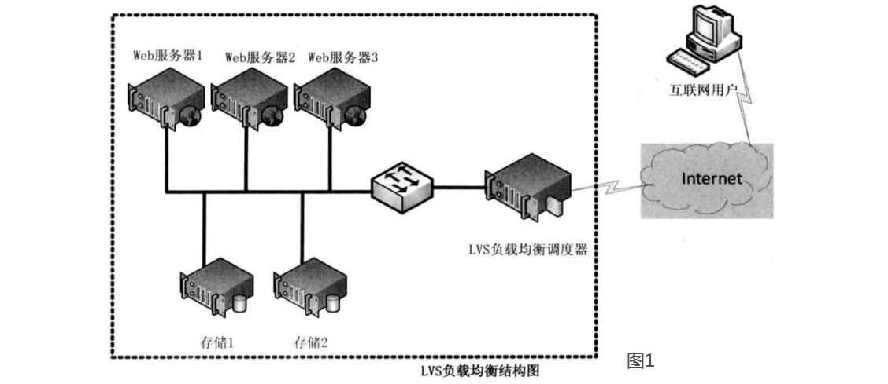
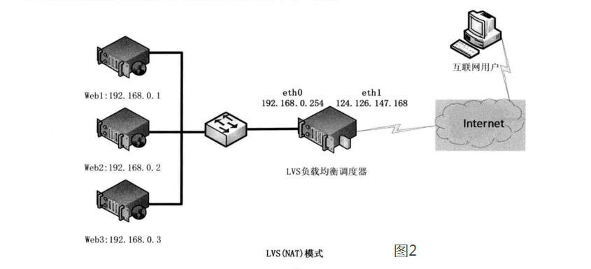
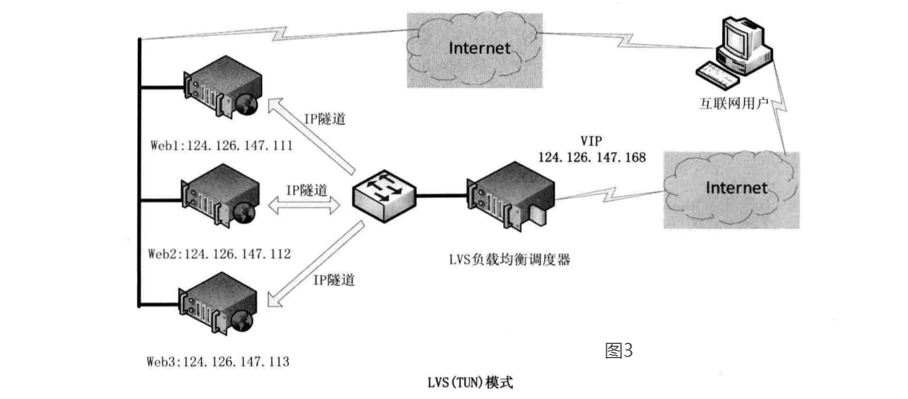
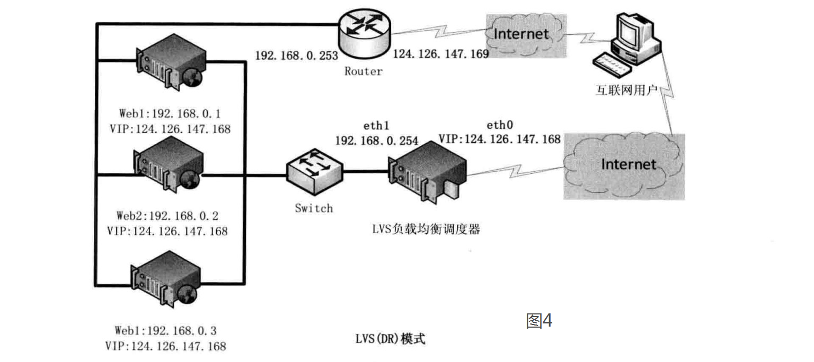

LVS
参考1 参考2 参考3 参考4 LVS（Linux Virtual Server）即Linux虚拟服务器,终端互联网用户从外部访问公司的外部负载均衡服务器，终端用户的Web请求会发送给LVS调度器，调度器根据自己预设的算法决定将该请求发送给后端的某台Web服务器，比如，轮询算法可以将外部的请求平均分发给后端的所有服务器，终端用户访问LVS调度器虽然会被转发到后端真实的服务器，但如果真实服务器连接的是相同的存储，提供的服务也是相同的服务，最终用户不管是访问哪台真实服务器，得到的服务内容都是一样的，整个集群对用户而言都是透明的。

LVS工作模式分为NAT模式、TUN模式、以及DR模式
LVS 三种工作模式
1.基于NAT的LVS模式负载均衡
NAT（Network Address Translation）即网络地址转换，其作用是通过数据报头的修改，使得位于企业内部的私有IP地址可以访问外网，以及外部用用户可以访问位于公司内部的私有IP主机。VS/NAT工作模式拓扑结构如图2所示，LVS负载调度器可以使用两块网卡配置不同的IP地址，eth0设置为私钥IP与内部网络通过交换设备相互连接，eth1设备为外网IP与外部网络联通。

2.基于TUN的LVS负载均衡

3、基于DR的LVS负载均衡
